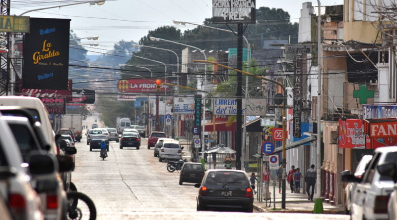
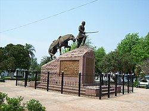

Bienvenidos a Revolucionando mi Ciudad
Somos una ONG comprometida con el cambio y la mejora de nuestra comunidad. ¡Únete a nosotros para marcar la diferencia!
¿Quiénes somos?
Revolucionando mi Ciudad nació con el propósito de promover el desarrollo sostenible y el bienestar social. Trabajamos de la mano con la comunidad para lograr un impacto positivo.
Nuestros Proyectos
- 🌱 Reciclaje comunitario
- 📚 Educación ambiental
- 🏞️ Rehabilitación de espacios públicos
Opiniones de los Ciudadanos
"Gracias a esta ONG, mi barrio ahora tiene un espacio verde donde todos podemos disfrutar." - María López
"Es increíble cómo el reciclaje ha cambiado la manera en que cuidamos nuestro entorno." - Juan Pérez
"La educación ambiental que promueven ha sido clave para nuestras futuras generaciones." - Sofía Gómez